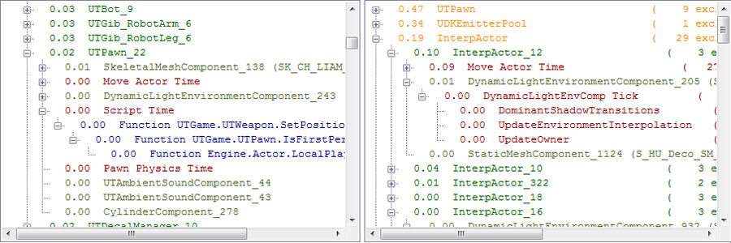
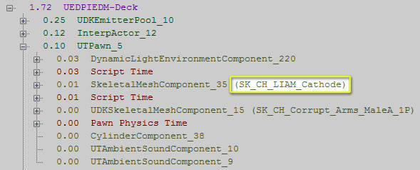
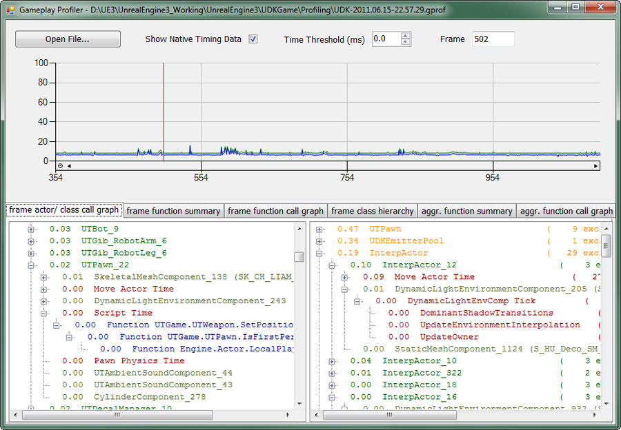
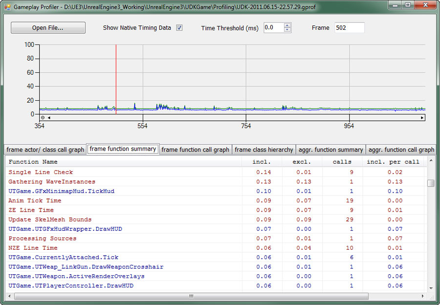
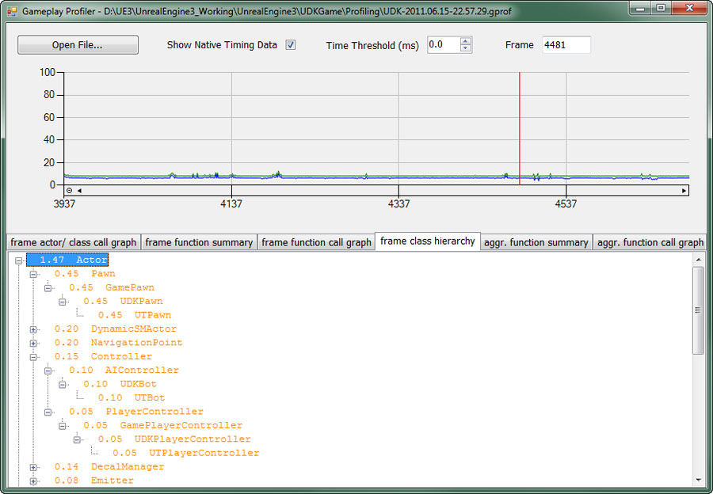
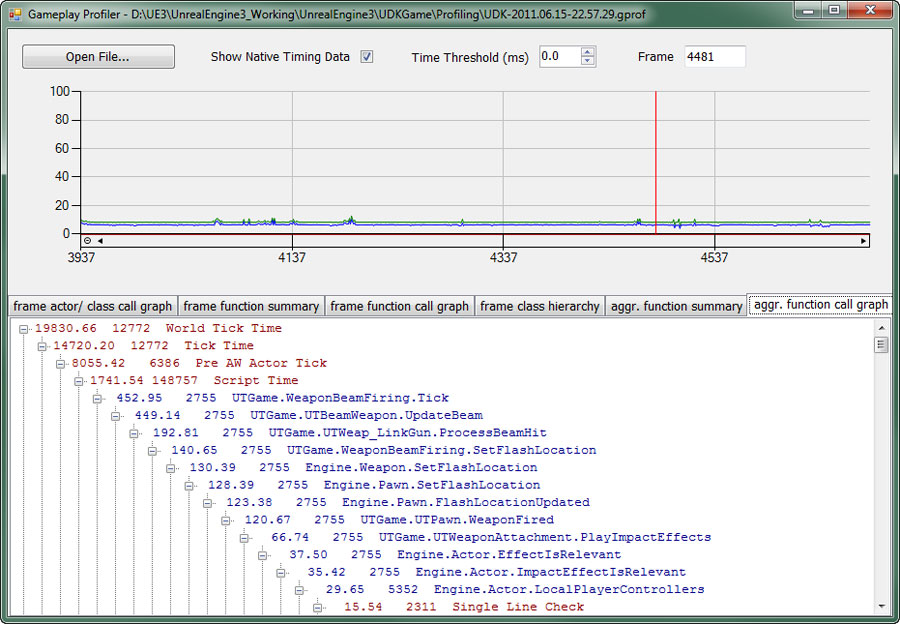

UDN
Search public documentation:
GameplayProfilerCH
English Translation
日本語訳
한국어
Interested in the Unreal Engine?
Visit the Unreal Technology site.
Looking for jobs and company info?
Check out the Epic games site.
Questions about support via UDN?
Contact the UDN Staff
日本語訳
한국어
Interested in the Unreal Engine?
Visit the Unreal Technology site.
Looking for jobs and company info?
Check out the Epic games site.
Questions about support via UDN?
Contact the UDN Staff
游戏性分析器
概述

创建Profile
PROFILEGAME START 控制台命令来开始对游戏性进行分析，通过运行 PROFILEGAME STOP 命令来停止分析。可替换地，您可以使用 PROFILEGAME 10 来捕获10秒钟的游戏性。
这将会在您的游戏 [GameName]\Profiling\ 文件夹中写入一个 .gprof 文件，游戏机平台的文件将会自动地复制到主机PC上。需要注意的是文件很快就会变得很大，所以最好进分析热点区域附近，大约10-30秒即可。
查看Profile
GameplayProfiler.exe ，然后按下 File Open(打开文件) 按钮并导航到你想打开的.gprof文件或者简单地在命令行中传入文件名称。
注意 ： 游戏性分析器的可执行文件可以在UE3或UDK发布包的Binaries目录中找到。
输出

数据类型是：- 蓝色 - 脚本函数
- 红色 - Native代码
- 紫色 - 关卡
- 绿色 - Actors
- 橄榄色 - 组件
- 橙色 - 类

Actor/类 的调用图表
这个视图分割为了两个单独的调用图表。左侧是选中帧的 level(关卡) -> actor -> component(组件)/ function(函数) 层次机构，它分别地显示了每个实例；右侧是按照actor class(actor类别) -> actor -> component(组件)/ function(函数)进行分组的。 您可以使用左侧来查看多关卡情境下哪个关卡是热点关卡(通常会在永久性关卡中产生一个对象)或者查看某些对象的相对消耗。 当您正在调查哪种类型的对象消耗时间时右侧的视图是有用的，同时在该视图中您也可以看到这里具有的某个类的实例个数。那里显示的inclusive(非独占)和exclusive (独占)数值代表着在剔除前树结构中inclusive(非独占的)和exclusive (独占的)子节点的数量。较大的inclusive(非独占的)值通常意味着调用了大量的不同的脚本函数。
Function summary（函数概述）
这个视图显示了选中帧中调用的每个脚本函数，及它们的独占时间和非独占时间，每个函数的调用次数及其独占时间和非独占时间的比率。您可以简单地点击某一栏，使它按降序排列。唯一的例外是函数名称栏，它总是按照升序排列。
Class hierarchy(Class的层次结构)
Class的层次结构是基于每个类的视图，它把性能消耗具体到actor、actor组件和函数顶层节点上。需要注意的是大多数actor组件和函数所占用时间已经考虑载了actor时间中，所以您不能简单地把它们相加。 这个视图可以用于简单地查看类的层次结构，比如，查看更新AI花费了多少时间或者在执行UnrealScript是花费了多少时间。
Function call graph（函数调用图）
这个标签面板显示了当前选中帧的函数调用图。
Aggregate function summary（合计函数概要）
这个标签面板和function summary(函数概要)面板类似，只是它把整个捕获的时间间隔的信息聚集到一起了。它把独占时间、非独占时间和函数调用数量聚集起来，最大独占时间和最大非独占时间分别是单独帧的最大值，其它的值是帧平均值。
合计的函数调用图表
所有执行的函数的调用图表，是在整个捕获期间的函数调用的合计信息。